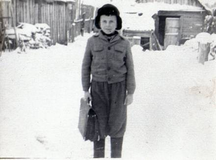
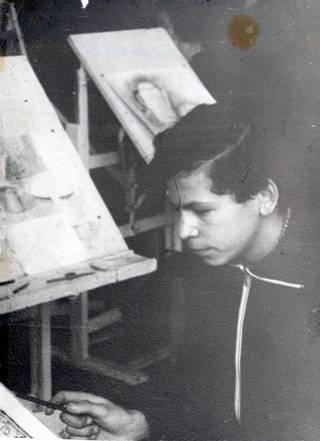
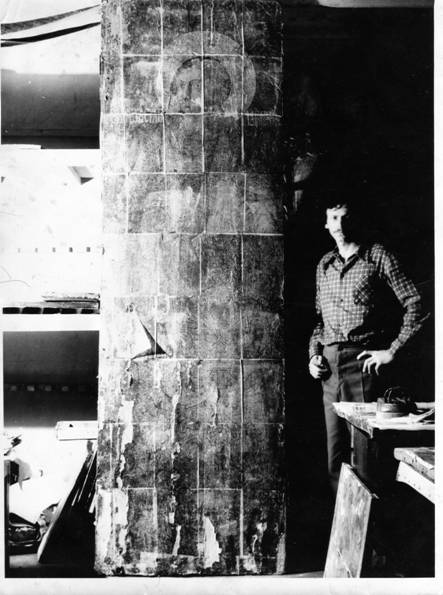
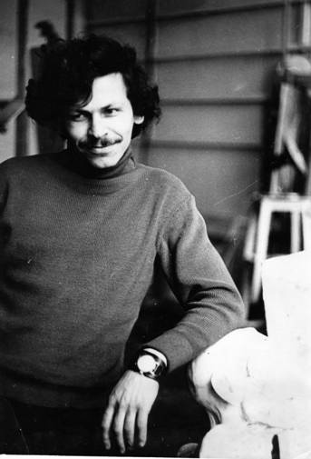
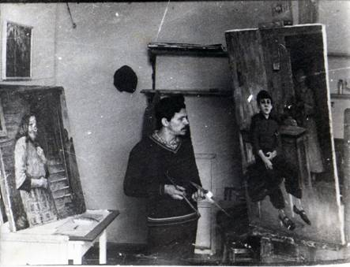
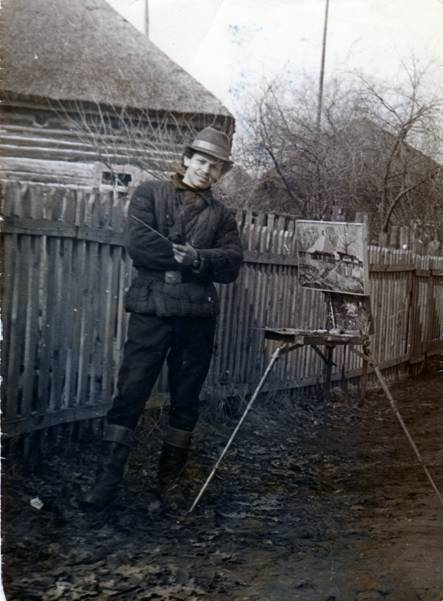

1953 29 Juni ist in Komarin (Weißrussland) geboren
1960 – 1968 die Schule in Komarin
1968 – 1972 künstlerische Ausbildung in Kunstschule. Leningrad
Diplom: Lehrer von Malerei und Zeichnen in der Schule
1972 – 1974 der Dienst der Armee
1976 - 1983 der Student der angesehenen „Kunstakademie Repin“
in der Fakultät Malerei. Leningrad
Diplom: Kunstmaler und Lehrer
1989 das Mitglied des Bündnisses der Kunstmaler Russlands
1996 wohnt und arbeitet in Sankt Petersburg, München und Berlin
BIOGRAPHIE
Die ersten Arbeiten Michail Tschernjavskis, die durch ihre Direktheit, durch ihre Farbintensität und die Originalität ihrer Komposition das Interesse des Betrachters erweckten, waren Ende der 80er Jahre auf Ausstellungen in Moskau und Sankt-Petersburg zu sehen. Es war die Zeit der Veränderungen, sowohl für das Leben des Landes, als auch für die Kunst.

Michail Tschernjavski wurde am 29. Juni 1953 im Dorf Komarin geboren. Von der einen Seite von dichten Birkenwäldern voller Waldtiere, Pilze und Beeren umgeben, von der anderen Seite vom majestätischen Fluss Dnjepr mit seinen zahlreichen Nebenflüssen, Bächen und Seen umbogen, war das Dorf von der Natur selbst dafür auserkoren worden, Malern und Musikern als Geburtsstätte zu dienen. Im Frühjahr trat der Fluss über die Ufer und verwandelte sich in ein endloses Meer. Nur ein kleiner Teil des Dorfes blieb vom Wasser unberührt. Nachts hielten die Menschen am Deich Wache, weil sie eine Katastrophe fürchteten. Nach einer Zeit jedoch ging das Wasser zurück und im Nu verwandelte sich ringsum alles in einen riesigen Frühlingsstrauß. Der Sommer bedeckte die Überschwemmungswiesen mit einem Teppich aus verschiedensten Blumen, farbenprächtigen bunten Schmetterlingen und Libellen. Unbemerkt begann der Herbst einzuziehen: die Seen erhielten eine himmelblaue Oberfläche, Marienfäden durchschwebten langsam den durchsichtigen Himmel. Der Herbst wurde vom Winter abgelöst. An vielen langen Winterabenden beobachtete Michail seinen älteren Bruder beim Aquarellzeichnen. Das war eine noch viel faszinierendere Sache als sich einen Film anzusehen, oder sich die Märchen und Erzählungen anzuhören, die der Vater abends immer vorlas. Der Künstler erinnert sich, wie er mit 9 Jahren seine Aquarellzeichnungen zu einem Kindermalwettbewerb nach Minsk schickte und als Preis einen wunderbaren Kasten mit Aquarellfarben und guten Pinseln erhielt. Das Malen wurde dadurch viel interessanter, zumal gute Farben schwer erhältlich und sehr teuer waren. Zu den Aquarellfarben kamen noch Guaschfarben hinzu, die ihm sein Vater geschenkt hatte. Die Zimmerwände wurden mit Kopien von Reproduktionen berühmter Künstler sowie mit eigenen Werken ausgeschmückt.

Nach Beendigung des achten Schuljahres fuhr der 15-jährige Michail Tschernjavski nach Petersburg zum Studium der Malerei. Hier trat er in eine Schule ein, die Kunstlehrer für die allgemein bildende Schule ausbildete. In dieser Kunstschule lehrte man Malerei, Komposition, Grafik, das Entwerfen von Theaterkostümen, das Fertigen von Puppen und vieles mehr. Die Ausbildung dauerte 4 Jahre. Der Unterricht begann um 9:00 morgens und endete um 21:00. Man konnte den Unterricht auch früher verlassen, doch die abendlichen Kurse in Porträt- und Aktzeichnen, in denen man vonälteren Kommilitonen lernen konnte, waren einfach interessant und lehrreich. Danach fuhr er vom Finnischen Bahnhof mit der S-Bahn 30 Minuten bis zum Dorf Lewaschowo, wo er in einem kleinen, spärlich beheizten Zimmer hauste. Solange der Ofen noch ein wenig Wärme abgab, musste er essen, seine Hausaufgaben vorbereiten und wenigstens ein paar Stunden lesen. Am Morgen herrschte im Zimmer richtiggehender Frost. Nachdem er sich mit Schnee wach gerieben hat, ging es im Eiltempo zur S-Bahn, wo er sich im Zugwagen endlich aufwärmen konnte. Ungeachtet all der Schwierigkeiten, die er durchzustehen hatte, war diese Zeit die Interessanteste in seinem Leben, wie sich der Künstler erinnert: Theater- und Museumsbesuche, gute Bibliotheken und die Kunstschule. Er erhielt die Möglichkeit, die Stadt Petersburg zu entdecken, die ihm wiederum die ganze Welt eröffnete. Vor dieser Zeit sah Michail Tschernjavski nur den Realismus als echte Kunst an. Die große Van- Gogh-Ausstellung in der Eremitage Ende der 60er Jahre brachte ihn dazu, nachzudenken und der Stimme seines Herzens zu lauschen. Es folgte eine Ausstellung Deutscher Expressionisten, ebenfalls in der Eremitage.Die Erinnerung an diese beiden Ausstellungen lässt den Künstler auch heute nicht ungerührt.
Erst viele Jahre später, Ende der 80er Jahre, wird die Freude über das, was er 20 Jahre zuvor in der Eremitage erblickt hatte, im Farbspiel der Bilder von Michail Tschernjavskj ausbrechen.
Im Jahre 1972 beendete Michail Tschernjavskij die Kunstschule. Ebenfalls in Petersburg studierende Kindheitsfreunde halfen ihm, eine Vielzahl von Zeichnungen und Studien zu den Eltern nach Belorussland zu bringen. Der Herbst des Jahres 1972 war ungewöhnlich mild und schön und erlaubte es dem Künstler, die warmen, windstillen Tage zum Malen und Zeichnen zu nutzen, bevor er im November seinen Militärdienst antreten musste. Die 2 Jahre in der Armee boten ihm nur selten Gelegenheit sich künstlerisch zu beschäftigen. Eine schlichtweg verlorene Zeit. Auf den Militärdienst folgen viele Monate beharrlichen Übens und im Jahre 1976 schließlich der Eintritt in die Fakultät für Malerei der Petersburger Kunstakademie.

Die ersten Monate des Studiums an der Akademie waren sehr interessant: Porträt- und Aktmalerei, Anatomieklasse, Vorlesungen in Kunstgeschichte.

Allerdings wurde es mit jedem Studienjahr langweiliger, die Themenstellungen wurden immer eintöniger und grauer. Der Kompositionslehre, dem wichtigsten Fach für Künstler, wurde kaum Zeit gewidmet. Im Jahre 1983 schloss Michail Tschernjavski dennoch erfolgreich die Akademie ab. Sein Diplombild erhielt die Note ausgezeichnet.
Im September desselben Jahres erwarb die Stadt Wolgograd auf einer großen Kunstausstellung in der Manege in Sankt Petersburg ein kleineres Werk des Künstlers, das den Titel „Porträt eines Mädchens“ trägt. Der Künstler hätte durchaus weiterhin in dieser Manier arbeiten können, wäre da nicht seine Suche nach einem eigenen Platz in der Kunst. Er fertigt in dieser Zeit Hunderte von Studien an, die er in vielen Fällen wieder erbarmungslos vernichtet. Im Dorf Murino, wo der Künstler damals wohnte, konnten einige jener Studien von Nachbarn und Bekannten vor der Vernichtung bewahrt werden. Michail Tschernjavskis Anspruch an sein Schaffen bleibt bis heute unverändert hoch. Im Katalog ist eine der zwischen Ende der 80er und Anfang der 90er Jahre entstandenen Arbeiten abgebildet: „Oktober an der Moika“. Hinter diesem Bild stecken mehr als 5 Jahre beharrlicher Arbeit, in deren Verlauf der Künstler seine Farbvision und seine Einstellung zur Komposition gedanklich erfasst und auf dem Bild soweit festgelegt hat, dass er anschließend mit seinen Farben möglichst sicher all das auszudrücken vermag, was ihn wirklich bewegt und erfreut.

Vergleicht man seine Arbeiten der letzten Jahre mit seinen älteren Werken, so kann man bei ihnen eine mit den Stilveränderungen einhergehende, zunehmend sensiblere Farbgebung feststellen. Die leuchtend reinen Farben, der von kalten und heißen Farbenflecken bestimmte Rhythmus wirken nur auf den ersten Blick zufällig. Eine kleine Studie oder ein großformatiges Bild verzaubern durch ihre emotionale Ausdruckskraft und ihre Kompositionsschärfe. Genau dieser misst der Künstler eine erstrangige Bedeutung bei. In den Studien und Bildern gibt es nichts Zufälliges, sei es nun ein zentraler Fleck oder ein unbedeutendes Detail. Wir sehen ein Zusammenspiel von Dunkel und Hell, ein Geflecht aus gegensätzlichen Farben, das ein märchenhaftes, komplexes Karussell ergibt, in dem es weder parallele noch vertikale Linien gibt. Durch das Brechen der Form, durch die Verzerrung der realistischen Grundlage zwingt der Künstler den Betrachter, die Farben wahrzunehmen, sie mit Herz und Seele zu erleben und erst danach über den Inhalt und Titel des Bildes nachzudenken.

Ungeachtet der sichtlichen Veränderungen, die sich innerhalb der letzten Jahre in seinen Bildern vollzogen haben, bleibt Michail Tschernjavski sich selbst treu, d.h. seiner Vision und seinem Verständnis der Malerei, jener individuellen Konzeption, die der Künstler nach seinem Akademieabschluss viele Jahre lang gesucht hat. Michail Tschernjavski hält seinen Schülern wie auch sich selbst unentwegt vor Augen:
„Erst wenn du die Kunst wahrhaftig und innig liebst und sie verstehst, wirst du in deinem Schaffen, einzig auf die Stimme deiner Intuition, deines Verstandes und deines Herzens vertrauend, jenes Individuelle und Einzigartige suchen und finden, das der Betrachten dann zweifelsohne wahr nimmt und lieb gewinnt.“